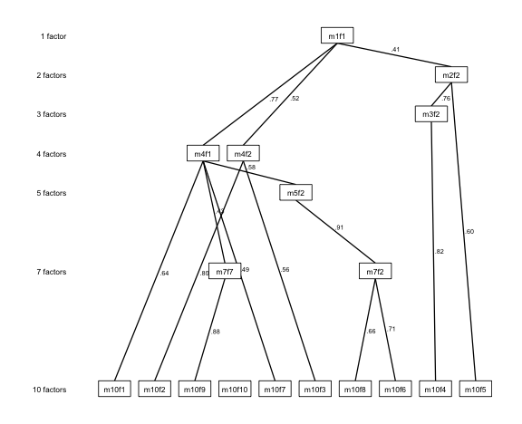
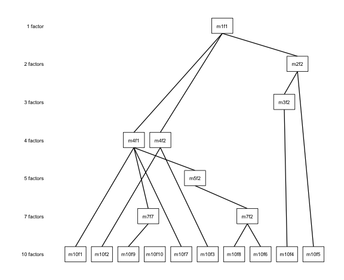

Reproducing Forbes (2023): The AMH Applied Example
Source:vignettes/ackwards-forbes2023.Rmd
ackwards-forbes2023.RmdForbes (2023) introduced the extended bass-ackwards method — all-pairs between-level correlations plus redundancy pruning — and demonstrated it on a real, deep hierarchy: the Assessing Mental Health (AMH) study, 155 mental-health symptom variables spanning 18 DSM disorders, measured in an Australian general-population sample (N = 3,175; Forbes et al., 2021). Her paper cites this package as the reference implementation of the extension.
The Spearman correlation matrix from that applied example ships with
the package as the forbes2023 dataset (redistributed from
Forbes’s OSF project under CC-BY 4.0; see ?forbes2023).
This vignette reproduces her published analysis end-to-end: the 10-level
hierarchy, the skip-level correlations, the redundancy chase, and the
pruned-factor diagram.
If the concepts here are new — what skip-level edges are,
how prune() decides what to flag — read
vignette("ackwards-forbes") first: it teaches the method
extension on a small didactic dataset. This vignette runs the real
thing.
The data
forbes2023 is a 155 × 155 Spearman correlation matrix,
not raw data:
library(ackwards)
dim(forbes2023)
#> [1] 155 155
forbes2023[1:3, 1:3]
#> Impulsivity Reckless_behaviour__i_ Blurting
#> Impulsivity 1.0000000 0.5415115 0.6172762
#> Reckless_behaviour__i_ 0.5415115 1.0000000 0.4783731
#> Blurting 0.6172762 0.4783731 1.0000000A correlation matrix carries no sample size, so we supply the AMH
study’s N explicitly with n_obs = 3175. (For the PCA engine
used here nothing downstream depends on N; supplying it is still good
practice — it is recorded in the object and enables N-dependent fit
statistics under the factor engines.)
Fitting the 10-level hierarchy
Forbes’s applied example extracts 1 through 10 components with all between-level pairs:
x <- ackwards(forbes2023, k_max = 10, pairs = "all", n_obs = 3175)
x
#>
#> ── Bass-Ackwards Analysis (ackwards) ───────────────────────────────────────────
#> Engine: pca
#> Rotation: varimax
#> Basis: (user-supplied matrix)
#> n: 3,175
#> k (max): 10
#>
#> ── Levels ──
#>
#> ✔ k = 1: 1 factor, 31.4% variance
#> ✔ k = 2: 2 factors, 36.8% variance
#> ✔ k = 3: 3 factors, 41.1% variance
#> ✔ k = 4: 4 factors, 44.9% variance
#> ✔ k = 5: 5 factors, 48.2% variance
#> ✔ k = 6: 6 factors, 50.8% variance
#> ✔ k = 7: 7 factors, 52.9% variance
#> ✔ k = 8: 8 factors, 54.6% variance
#> ✔ k = 9: 9 factors, 56.2% variance
#> ✔ k = 10: 10 factors, 57.6% variance
#>
#> ── Edges ──
#>
#> 312 of 1320 edges have |r| ≥ 0.3
#> ────────────────────────────────────────────────────────────────────────────────
#> Note: This is a series of linked solutions, not a fitted hierarchical model.
#> Cross-level edges are descriptive score correlations. Per-level fit indices
#> (EFA/ESEM) describe how well a k-factor model fits the items at that level --
#> they do not validate the edges or the hierarchy itself.The hierarchy unfolds a general factor of psychopathology at the top
(k = 1, ~31% of variance) down to ten fine-grained components
(cumulatively ~58%). With pairs = "all", the edge table
holds 1320 correlations across all 45 level pairs — every one of which
is matched against Forbes’s own reference implementation by the package
regression test (see Fidelity, below).
Label mapping. Forbes labels components by level
letter and position within the level: a1 for the single
component at k = 1, b1–b2 at k = 2, down to
j1–j10 at k = 10. ackwards uses
m{k}f{j} for the same positions, so her d4 is
m4f4 and her j4 is m10f4. Signs
may differ component-by-component (the package aligns each factor to its
primary parent; see vignette("ackwards-intro")), which
leaves every correlation identical in absolute value.
Skip-level structure
The deep hierarchy is where skip-level correlations earn their keep. Among the non-adjacent pairs alone, 48 correlations exceed |r| = 0.9 — components that persist essentially unchanged across two or more levels:
| Strongest skip-level edges in the AMH hierarchy | ||||
| Top 10 non-adjacent pairs by |r| | ||||
| From | To | Level (from) | Level (to) | r |
|---|---|---|---|---|
| m6f6 | m8f7 | 6 | 8 | 1.000 |
| m7f6 | m9f5 | 7 | 9 | 0.999 |
| m6f6 | m9f5 | 6 | 9 | 0.998 |
| m5f5 | m8f7 | 5 | 8 | 0.998 |
| m5f5 | m7f6 | 5 | 7 | 0.998 |
| m8f7 | m10f5 | 8 | 10 | 0.998 |
| m7f6 | m10f5 | 7 | 10 | 0.998 |
| m6f6 | m10f5 | 6 | 10 | 0.997 |
| m5f5 | m9f5 | 5 | 9 | 0.996 |
| m7f5 | m9f4 | 7 | 9 | 0.996 |
Correlations this close to 1.0 across multiple levels are the signature of redundancy: the intermediate solutions are relabeling a stable dimension, not refining it. That is exactly what the redundancy chase formalizes.
The redundancy chase
Forbes’s ChaseCorrPaths() procedure walks each component
upward through the hierarchy, at every ancestor level taking the
component with the largest direct (skip-level)
correlation, and continuing while |r| ≥ 0.9. Chains of near-identical
components are then collapsed to a single retained node.
prune(x, "redundant") implements the same rule as its
default (redundancy_criterion = "direct"):
xp <- prune(x, "redundant")
#> ℹ Redundancy pruning (direct criterion, |r| ≥ 0.9) flagged 37 nodes.
#> ℹ Nodes are retained in the object; inspect with `x$prune$nodes` and
#> `x$prune$chains`.Of the 55 components in the full hierarchy, 37 are flagged as
redundant, leaving 18 distinct constructs — the same
decomposition reported in Forbes (2023). As always, prune()
only annotates: nothing is removed from the object, and every
flagged component keeps its loadings, scores, and edges.
A chain, worked
Forbes’s chase traces the chain
d4 → e4 → f5 → g5 → h5 → i4 → j4: one dimension surfacing
at k = 4 and persisting, near-unchanged, to k = 10. In
ackwards labels, that chain is:
ch <- xp$prune$chains
d4 <- ch[ch$chain_id == ch$chain_id[ch$id == "m10f4"], c("id", "level", "retain")]
d4
#> id level retain
#> 14 m4f4 4 FALSE
#> 15 m5f4 5 FALSE
#> 16 m6f5 6 FALSE
#> 17 m7f5 7 FALSE
#> 18 m8f5 8 FALSE
#> 19 m9f4 9 FALSE
#> 20 m10f4 10 TRUEBecause the chain reaches the deepest level, the retention rule keeps
its bottom node — m10f4 (her
j4), the most specific, best-defined manifestation — and
flags the six components above it as redundant. A chain that stops short
of k = 10 instead keeps its top node, the broadest
manifestation.
The full retained set (13 chain-retained components, in level order): m1f1, m4f2, m5f2, m7f7, m10f1, m10f2, m10f3, m10f4, m10f5, m10f6, m10f7, m10f8, m10f9. The other 5 kept components were never part of a |r| ≥ 0.9 chain at all, so no retention rule applies to them.
Why the direct criterion matters here
Correlation is not transitive: a chain of adjacent links each ≥ 0.9 does not guarantee the two ends correlate ≥ 0.9 directly. On shallow hierarchies the distinction rarely bites, but on this 10-level hierarchy it does — Forbes’s direct rule and an adjacent-hop walk disagree on 7 of the 54 chased components:
xa <- prune(x, "redundant", redundancy_criterion = "adjacent")
#> ℹ Redundancy pruning (adjacent criterion, |r| ≥ 0.9) flagged 36 nodes.
#> ℹ Nodes are retained in the object; inspect with `x$prune$nodes` and
#> `x$prune$chains`.The adjacent opt-in flags 36 components (vs 37 under the default) and
retains m3f3, which the direct rule chases further up the
hierarchy. The default reproduces Forbes’s published chase exactly — all
54 components, including those 7 divergences — so stick with it when
your goal is comparability with her method;
redundancy_criterion = "adjacent" remains available for
sensitivity analysis.
The pruned-factor diagram
Dropping the flagged components and bridging each retained component directly to its strongest kept ancestor yields the pruned-factor diagram, in the same publication style as Forbes (2023) — black lines, uniform width, no legend, correlation labels on each spanning arrow:
autoplot(xp,
drop_pruned = TRUE, show_r = TRUE,
color_pos = "black", color_neg = "black",
edge_linewidth = 0.6, show_arrows = FALSE, legend = FALSE
)
Whole levels vanish (every component at those levels was flagged), leaving deliberate gaps in the y-axis. To compact the layout while keeping the original level numbers:
autoplot(xp,
drop_pruned = TRUE, compress_levels = TRUE,
color_pos = "black", color_neg = "black",
edge_linewidth = 0.6, show_arrows = FALSE, legend = FALSE
)
For the full set of cosmetic controls, see
vignette("ackwards-visualization").
Fidelity
This reproduction is not merely visual — it is pinned by the
package’s regression suite
(tests/testthat/test-forbes-fidelity.R), which verifies on
every check run that:
- all 45 between-level correlation matrices match the output of Forbes’s own reference implementation entrywise in absolute value (tolerance 1e-12), and
- the direct redundancy chase lands on her published
ChaseCorrPaths()result for all 54 chased components.
The expected values were computed with Forbes’s reference
implementation (from her OSF project,
https://osf.io/pcwm8/) on the same md5-pinned matrix that
ships as forbes2023, so the dataset and the oracle cannot
drift apart. Only ackwards() runs at test time.
References
Forbes, M. K. (2023). Improving hierarchical models of individual differences: An extension of Goldberg’s bass-ackward method. Psychological Methods. https://doi.org/10.1037/met0000546
Forbes, M. K., Sunderland, M., Rapee, R. M., Batterham, P. J., Calear, A. L., Carragher, N., Ruggero, C., Zimmerman, M., Baillie, A. J., Lynch, S. J., Mewton, L., Slade, T., & Krueger, R. F. (2021). A detailed hierarchical model of psychopathology: From individual symptoms up to the general factor of psychopathology. Clinical Psychological Science, 9(2), 139–168. https://doi.org/10.1177/2167702620954799
Goldberg, L. R. (2006). Doing it all Bass-Ackwards: The development of hierarchical factor structures from the top down. Journal of Research in Personality, 40(4), 347–358. https://doi.org/10.1016/j.jrp.2006.01.001